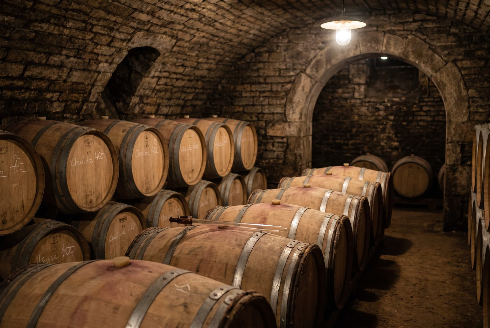

Les domaines · Côte de Beaune · Chassagne-Montrachet
19
Chassagne-Montrachet · Côte de Beaune
Domaine Coffinet-Duvernay
Des chassagnes classiques et élégants, fidèles à l'expression de chaque climat.

Ambiance de Chassagne-Montrachet
Fondé en 1989 par Laura Coffinet, dont la famille est enracinée à Chassagne depuis 1860, et son mari Philippe Duvernay, originaire de Givry, le domaine cultive environ 6,5 hectares, dont une parcelle du grand cru Bâtard-Montrachet. Leur fils Bastien les a rejoints en 2012 et conduit aujourd'hui les vinifications. Vendanges manuelles, pressurage pneumatique, levures indigènes et usage mesuré du bois neuf définissent une approche traditionnelle et peu interventionniste.
Blancs
- Cépage · ChardonnayArgilo-calcaire du Jurassique; un vin riche et profond, aux notes de miel, de fleurs blanches et de sous-bois.
- Cépage · ChardonnayL'un des climats les plus réputés de Chassagne pour les blancs.
- Cépage · ChardonnayPremier cru voisin du Montrachet, qui donne un vin puissant.
- Cépage · ChardonnayUn vin riche et ample, dans le style généreux des Morgeot.
- Cépage · ChardonnayVignes d'environ 85 ans, aux notes fumées et de fenouil.
- Cépage · ChardonnayUn vin intense, d'une élégance fraîche.
- Cépage · Chardonnay
- Cépage · ChardonnayLieu-dit de village en contrebas de Criots-Bâtard-Montrachet, au profil minéral; environ 25 % de fûts neufs.
- Cépage · Chardonnay
Rouges
- Cépage · Pinot Noir
Ces cuvées vous parlent ?
Demander les disponibilités